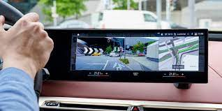
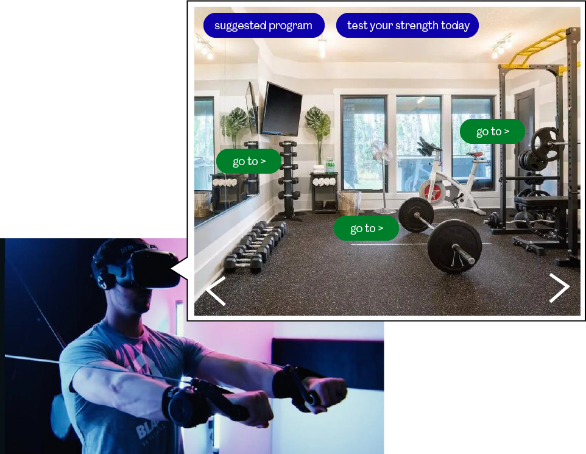

1. AR technology in BMW iX electric cars
The Finnish company Basemark has developed new augmented reality technology of autonomous driving software for the BMW iX electric cars. The purpose of these new features is to help increasing the driving experience, in terms of comfort and safety.
In this technology, the electric vehicles use sensor data and computer vision functionality, where allows the AR information to show inside the car's screen. How it works is that - the front-view camera will automatically sends live footage to the curved touchscreen. Then, interactive arrows appear to show the driver exactly where they need to go.
2. Machine Operator Training ROI
The purpose of this technology is to help PBC Linear, a company that makes linear motion product, to capture tribal knowledge and machine instructions from experienced employees and use the resulted content to train new machine operators. By doing so, it helps with having a faster training and to prevent errors.
I found on the website that it explained fully how it was developed. I would like to include it as well as I found it very insightful and gave me a clearer picture in terms of development. How it was started was that, the company shadowed their technicians at operating a machine. They recorded and also educated themseles, so that they can build a template in the software. The template isn't only about the steps in word, but also pictures, video and notes. Then, it is implemented with the headset and attach 3D markers.
How it works actually sound more simple than expected. The company attach a QR marker to a fixed location near the machine, so that the template can be activated and the instructions will start.
3. To be filled
Fight against shyness/awkwardness for gym newbies
When you go to a gym room for the first few times and there is a lot of users using the equipments, following a training program like a pro. Have you ever encountered such situation and you feel so worried that you messed up with some facilities or steps then others would look at you and tease you? (At least i did) Although having a personal trainer could solve the problem, but not that everyone can afford it and it also lost the flexibility of schedule and location. With this XR technology, you can first connect yourself to a stimulate gymroom to use different equipments step by step. The system will also correct if it is wrong or it detects a potential harm or danger. There is also an option if you want to pin a certain instruction and it will automatically send to your device, so that you can review it when you need.
In addition, with the XR equipments set, user can also test their strength, e.g. arm power and the system will suggest by what weight they can use.
What did you think of this topic?
My only knowledge with AR was probably about Pokemon go. It is impressive to see how this technology has already been widely developed. I feel impressed of how such technology has been implemented in education, healthcare and manufacturing industries already. Back in Hong Kong, I was major in Print media where I had to learn different printing techniques and machines. However, because some machines are really big and expensive, it is unlikely that the school will have it or company would be happy to let students to try it on. After learning this topic, I really wish I can at least learn in a stimulated environment rather than from text.
How do you see applications and the future of this?
I might sound negaitve here, but it causes me worried with the some examples (from snapchat, the design concept of advertisment world and metaverse) that i watched from our lecture. They are very fun and almost make me feel like living in another universe, but for me it is also overwhelming because of all the sensations and triggers with the environment. The level of entertainment in this case is too intense.
This technology also triggers my other thought - The pace of how the world is developmenting has been fairly fast, but at the same time it also creates a much bigger gap with less wealthy countries. Every year we have different trends and it almost feels like the trend is developed so fast that it already jump to the next phrase before the majority of people able to act upon it. However, I can see the future will adapt even more XR technology as it is such a valuable resources for human to improve and learn.
Did the subject meet your expectations?
Yes. I have learned a lot and get to see how the technology is being used in different industry.